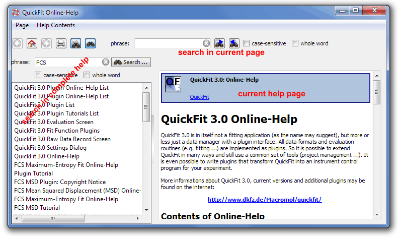

$$qf_commondoc_header.start$$ $$qf_commondoc_header.end$$
QuickFit contains an online help-system that provides information on how the different functions work and how they are operated. The help browser is a versatile window which allows to display, browse, search and print these online help pages.

This windows supports these functions:
 print the current help page
print the current help page go back home to QuickFit's main help page
go back home to QuickFit's main help page /
/ move one page back and forth in the history of visited help pages (like in your webbrowser)
move one page back and forth in the history of visited help pages (like in your webbrowser) Search in current help page: This function opens/hides widgets that allow to search in the current help page. You can select whether the search is case sensitive or not and whether only whole words are found by the search engine. Searching begins immediately after you start to type a phrase into the search input box. With the buttons
Search in current help page: This function opens/hides widgets that allow to search in the current help page. You can select whether the search is case sensitive or not and whether only whole words are found by the search engine. Searching begins immediately after you start to type a phrase into the search input box. With the buttons  and
and  it is possible to search forward and backward, starting at the current cursor position.
it is possible to search forward and backward, starting at the current cursor position. this function opens the global search pane on the left of the helpm page display, which allows you to search through all help files available on QuickFit. This search may take several seconds! Here you first have to type a search phrase (and select whether the search is cas-sensitive or not and whether it only matches whole words) and the click on "Search ..." to start the search. The results will be displayed in the list below the phrase input widget. A double-click on any entry in the list will open the according help page and select the first occurence of the search phrase.
this function opens the global search pane on the left of the helpm page display, which allows you to search through all help files available on QuickFit. This search may take several seconds! Here you first have to type a search phrase (and select whether the search is cas-sensitive or not and whether it only matches whole words) and the click on "Search ..." to start the search. The results will be displayed in the list below the phrase input widget. A double-click on any entry in the list will open the according help page and select the first occurence of the search phrase.